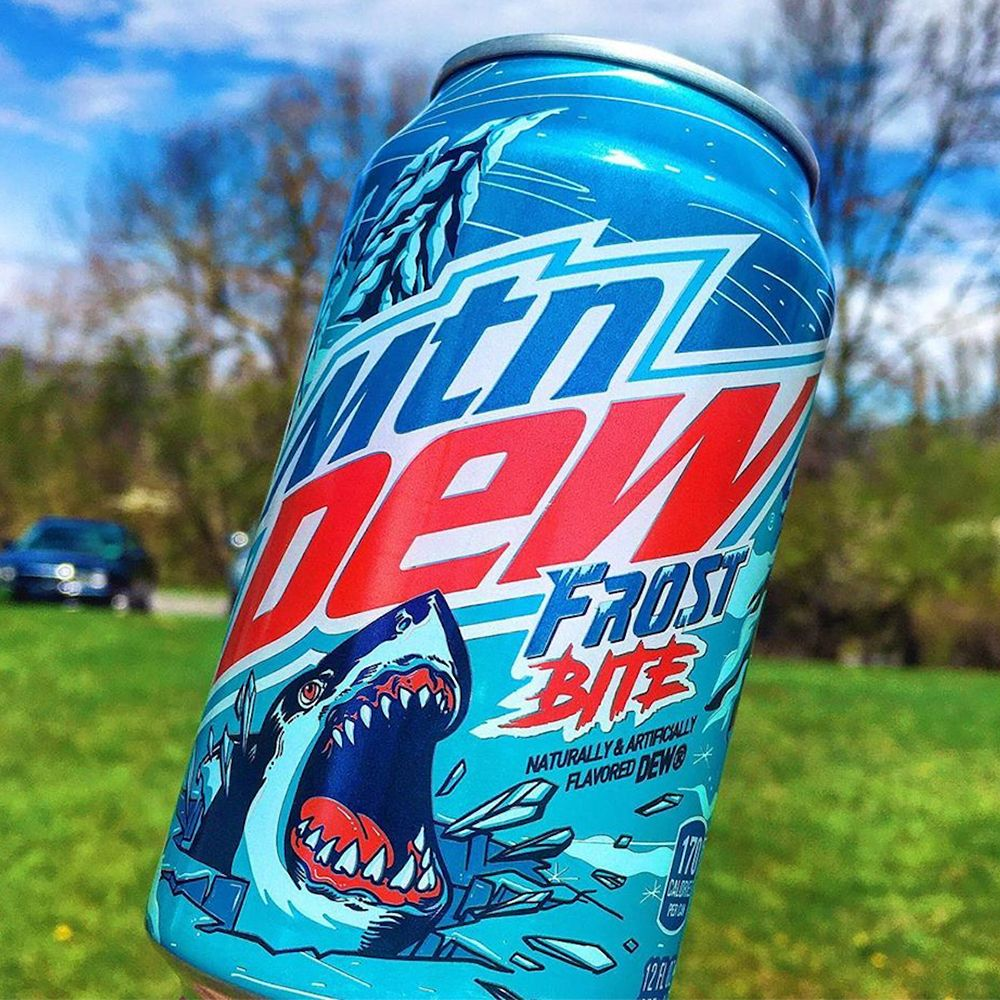
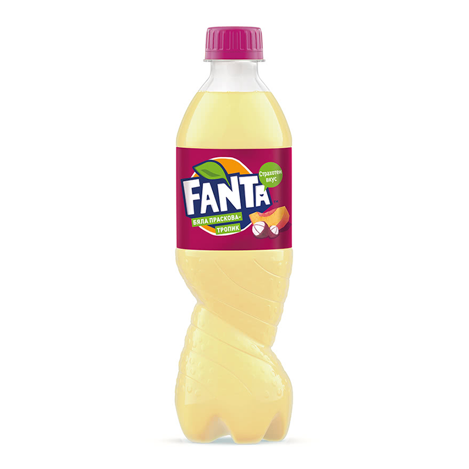

This is My Website of exotic drinks around the world!
This is a list of soda I tryed this Year.
- Mountain Dew VooDoo
- Mountain Dew Liberty Brew
- Faygo Soda line
- Fanta Soda line


This is a list of Soda that I have not tryed and would like to!.
- Mountain Dew whitout
- Mountain Dew frostbite
- Fanta white peach
- Faygo candy apple
- Fanta white peach mangousteen


My favourite Exotic and limited edition drinks
About me
This is my website about my favourite drinks that can be tricky to find. Some are limited edition some are based on country, and are so fun to try!
This year I have tryed a few new cool soda's but i am always on the hunt for something new and exciting. I also look for cool candy and chips, well lets say snacks that you cannot find in canada or are rare to find in canada like theses drinks, but thats another topic itself.